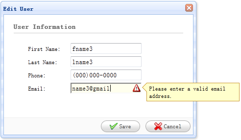

页面显示HTML代码
“<”用<表示
“>”用>表示
“"”用"表示
jQrery EasyUI
jQuery EasyUI 是一个基于 jQuery 的框架，集成了各种用户界面插件。
声明组件
data-options
编写JS代码来创建组件
先用HTML写一个框
<input id="cc" style="width:200px" /> 效果：
然后用JS获取ID.组合框
$('#cc').combobox({
url: ...,
//数据网页的链接
required: true,
//生成字段验证true[必需]false[不必需]默认false
valueField: 'id',
//把该基础数据的值名称绑定到组合下拉框中[value]
textField: 'text'
//把该基础数据的字段名称绑定到组合下拉框中[text]
});
EasyUI应用
使用EasyUI框架实现一个CRUD DataGrid（增删改查数据表格）
我们使用下面的插件：
- datagrid：向用户展示列表数据。
- dialog：创建或编辑一条单一的用户信息。
- form：用于提交表单数据。
- messager：显示一些操作信息。
创建DataGrid来显示用户数据
用框架创建表格：
<table id="dg" title="My Users" class="easyui-datagrid" /*应用easyui框架*/ style="width:550px;height:250px" url="get_users.php" /*数据链接地址*/ toolbar="#toolbar" /*添加工具栏*/ rownumbers="true" /*显示行号*/ fitColumns="true" /*自动扩展或收缩列的大小以适应网格宽度和防止水平滚动条*/ singleSelect="true" /*只允许当前选择一行数据*/ > <thead> /*表头*/ <tr> <th field="firstname" width="50">First Name</th> <th field="lastname" width="50">Last Name</th> <th field="phone" width="50">Phone</th> <th field="email" width="50">Email</th> /*field是easyui读取数据库的一个属性名，实际上就是字段名*/ </tr> </thead> </table> <div id="toolbar"> <a href="#" class="easyui-linkbutton" iconCls="icon-add" plain="true" onclick="newUser()">New User</a> <a href="#" class="easyui-linkbutton" iconCls="icon-edit" plain="true" onclick="editUser()">Edit User</a> <a href="#" class="easyui-linkbutton" iconCls="icon-remove" plain="true" onclick="destroyUser()">Remove User</a> /*a链接标签。用easyui链接按钮框架。iconCls:提供一个背景图片作为标题图标。plain：效果显示为普通。*/ </div>
效果如下图所示：

用php获取数据的代码：
$rs = mysql_query('select * from users');
/*声明变量等于数据库数据*/
$result = array();
/*创建数组*/
while($row = mysql_fetch_object($rs)){
/* while (条件为真) { 要执行的代码; }mysql_fetch_object() 函数从结果集中取得一行作为对象。*/
array_push($result, $row);
/* array_push(array,value1) array规定数组 value1规定要添加的值 */
}
echo json_encode($result);
/*输出数据库一行行数据*/
创建表单对话框
用DIV和easyui框架搭建对话框：
<div id="dlg" class="easyui-dialog" style="width:400px;height:280px;padding:10px 20px"closed="true" buttons="#dlg-buttons">
/*用到easyui对话框dialog框架，closed是否可以关闭窗口,buttons表示这个对话框下面的两个确认，取消按钮*/
<div class="ftitle">User Information</div>
/*重新建一个div框，建立一个标题*/
<form id="fm" method="post">
/*建立一个表单，发送数据模式为post*/
<div class="fitem">
<label>First Name:</label>
<input name="firstname" class="easyui-validatebox" required="true">
</div>
/*label元素不会向用户呈现任何特殊效果。当用户选择该标签时，浏览器就会自动将焦点转到和标签相关的表单控件上。
应用了ValidateBox验证箱框架,如果用户输入无效的值，它将改变背景颜色，显示警告图标和提示消息。
required 属性规定必需在提交之前填写输入字段*/
<div class="fitem">
<label>Last Name:</label>
<input name="lastname" class="easyui-validatebox" required="true">
</div>
<div class="fitem">
<label>Phone:</label>
<input name="phone">
</div>
<div class="fitem">
<label>Email:</label>
<input name="email" class="easyui-validatebox" validType="email">
</div>
/*validType框架属性，验证输入字段是否为email格式*/
</form>
</div>
<div id="dlg-buttons">
/*对话框中的两个按钮*/
<a href="#" class="easyui-linkbutton" iconCls="icon-ok" onclick="saveUser()">Save</a>
<a href="#" class="easyui-linkbutton" iconCls="icon-cancel" onclick="javascript:$('#dlg').dialog('close')">Cancel</a>
/*a链接标签。用easyui链接按钮框架。iconCls：提供一个背景图片作为标题图标。*/
</div>
效果图如下所示：
实现创建和编辑用户
当创建用户时，打开一个对话框并清空表单数据。
function newUser(){
$('#dlg').dialog('open').dialog('setTitle','New User');
$('#fm').form('clear');
url = 'save_user.php';
/*$("#dlg").dialog("open");open是事件的名称，点击按钮时打开dialog了。
$.dialog('setTitle'."标题");setTitle窗口的标题
$('#fm').form('clear');表单id.清空表单数据*/
}
当编辑用户时，打开一个对话框并从 datagrid 选择的行中加载表单数据。
var row = $('#dg').datagrid('getSelected');
if (row){
$('#dlg').dialog('open').dialog('setTitle','Edit User');
$('#fm').form('load',row);
url = 'update_user.php?id='+row.id;
/**/
/*打开编辑数据窗口*/
}
'url' 存储着当保存用户数据时表单回传的 URL 地址。
保存用户数据
用JS保存用户数据：
function saveUser(){
$('#fm').form('submit',{
url: url,
onSubmit: function(){
return $(this).form('validate');
},
success: function(result){
var result = eval('('+result+')');
if (result.errorMsg){
$.messager.show({
title: 'Error',
msg: result.errorMsg
});
} else {
$('#dlg').dialog('close'); // close the dialog 关闭对话框
$('#dg').datagrid('reload'); // reload the user data 重新加载用户数据
}
}
});
}
/*提交表单之前，'onSubmit' 函数将被调用，该函数用来验证表单字段值。当表单字段值提交成功，关闭对话框并重新加载 datagrid 数据。*/
删除一个用户
使用下面的代码来移除一个用户：
function destroyUser(){
var row = $('#dg').datagrid('getSelected');
if (row){
$.messager.confirm('Confirm','Are you sure you want to destroy this user?',function(r){
if (r){
$.post('destroy_user.php',{id:row.id},function(result){
if (result.success){
$('#dg').datagrid('reload'); // reload the user data
} else {
$.messager.show({ // show error message
title: 'Error',
msg: result.errorMsg/*返回的json的错误的内容*/
});
}
},'json');
}
});
}
}
移除一行之前,我们将显示一个确认对话框让用户决定是否真的移除该行数据。当移除数据成功之后，调用 'reload' 方法来刷新 datagrid 数据。
效果如下所示：